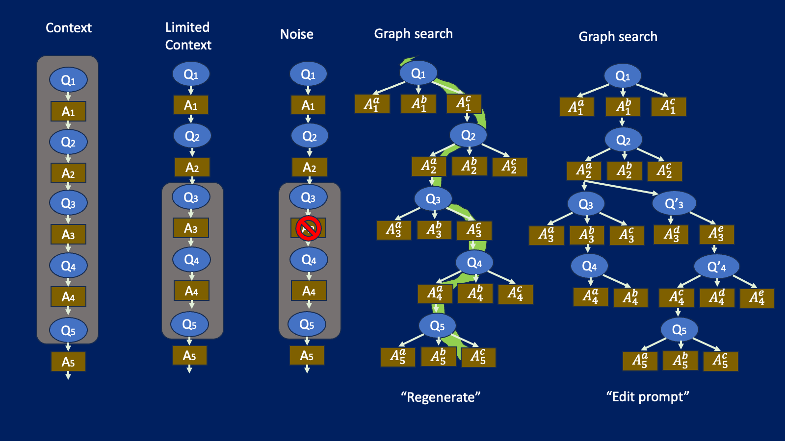
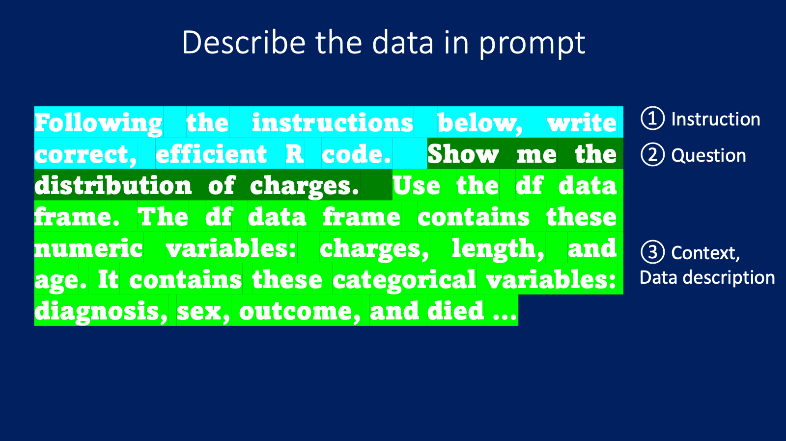
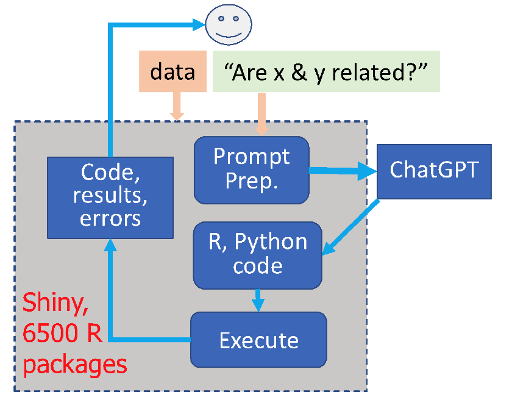
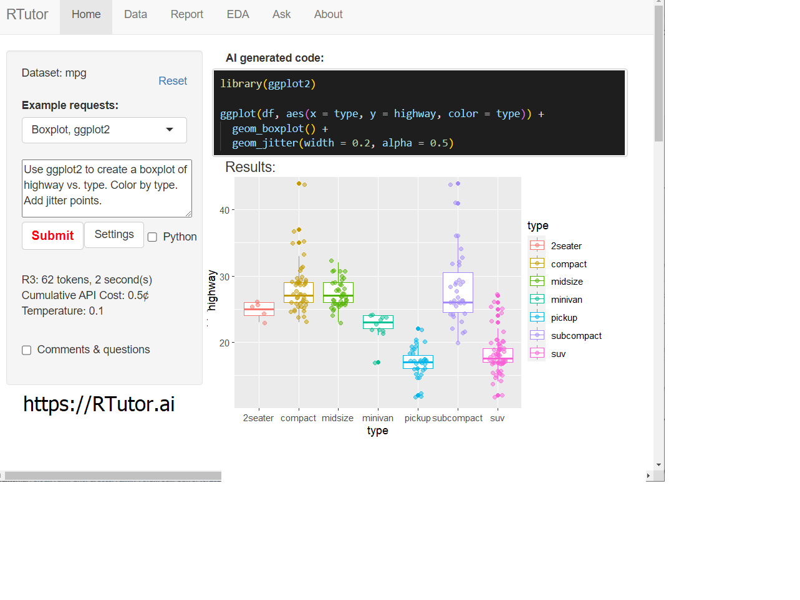
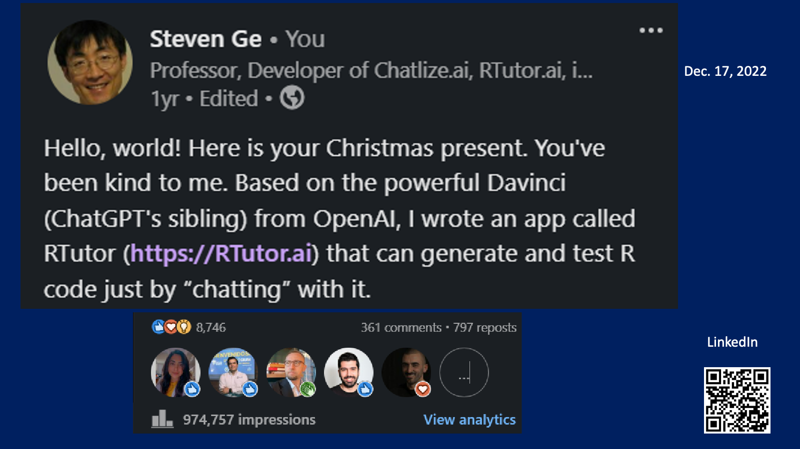
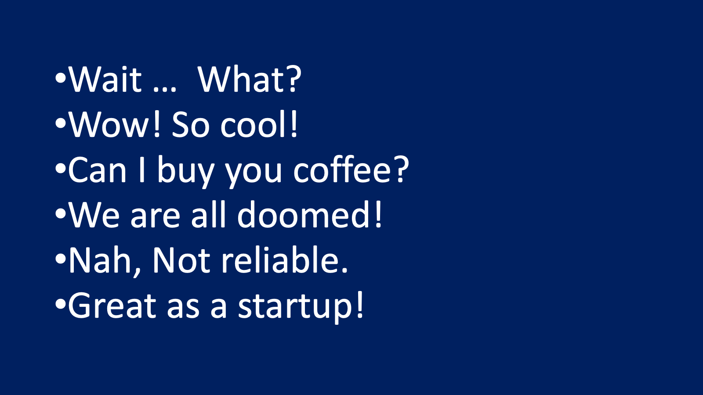
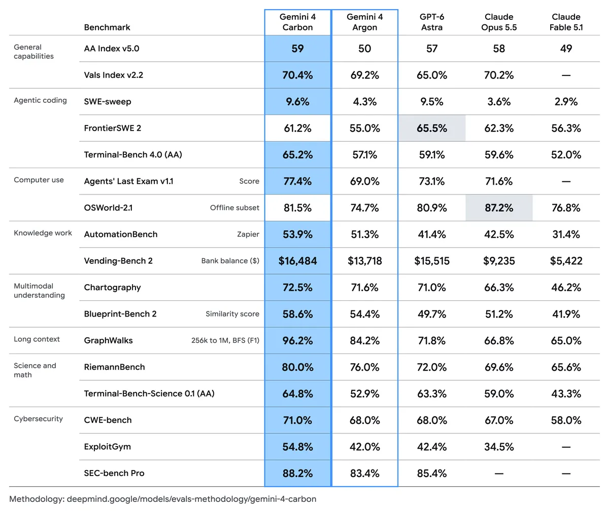
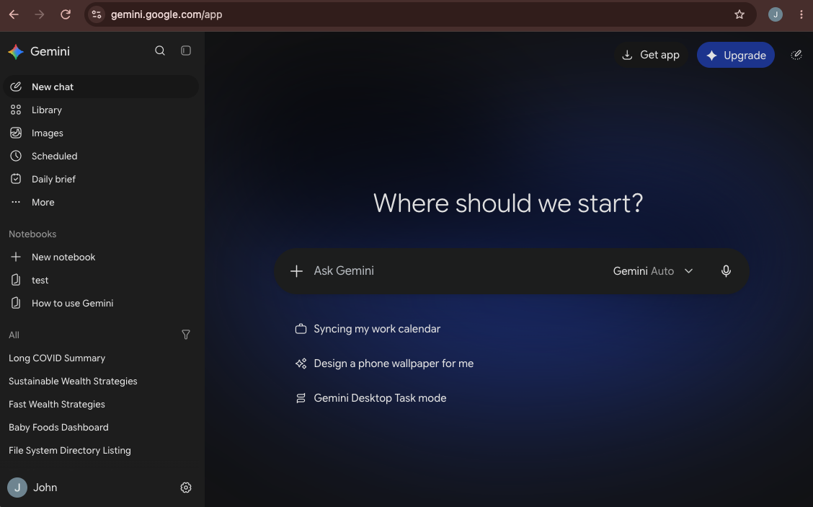
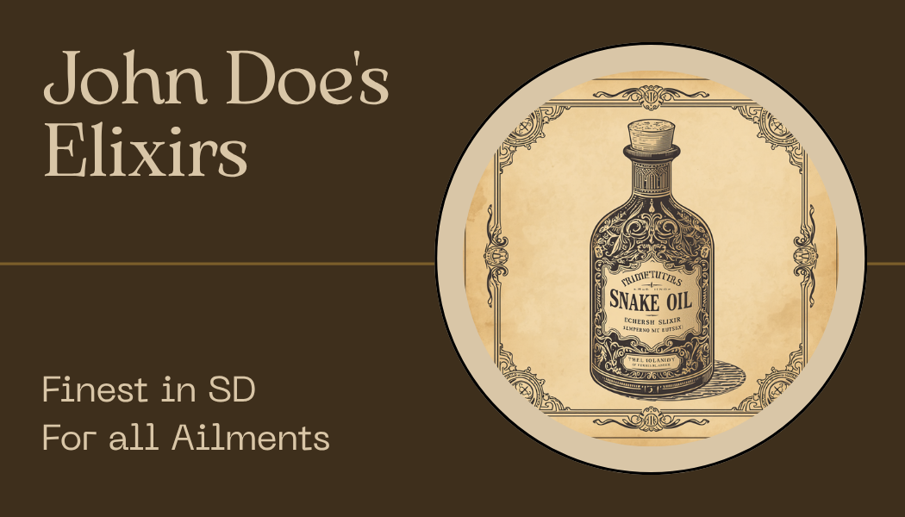

Dr. G’s AI Study Group
Google Gemini for Productivity
Xijin “Steven” Ge
Session 1 recap
Be specific
Plan → produce → review
Start small, iterate
Edit, branch, regenerate
Push back!!!
Pile it all into one chat
Blindly trust
What you shared


Dynamically construct prompts
General
instruction
User
question
Data
description
AI apps use LLMs programmatically




Image: Brain World Magazine
Use Gemini on the web, phone, or laptop
gemini.google.com
Talk, show, and share your screen
Gemini Live
An agent works on your files
Antigravity, Gemini for Desktop
Your chats follow you.
Gemini gives you many AI tools
| Product | What it is | Use |
|---|---|---|
| Gemini LLM | Multimodal chatbot | Questions, writing, coding, reasoning |
| Nano Banana | Image generator | Create and edit images from text |
| Gemini Omni | Video generator | Short videos from text, images, audio |
| Gemini Notebook | Research workspace | Chat with your PDFs, notes, and links |
| Google Antigravity | Coding agent | Agents that write code and build apps |
Match the model and thinking level to the task
Gemini is better than ChatGPT and Claude?

Work with files on the web, Drive, or laptop
Upload to a chat or a Notebook
Attach a folder or type @Google Drive
Open a folder in Antigravity
From chat to agent: more autonomy, more risk
Gemini web
The conversation
“Summarize it.”
Gemini for Desktop
+ your files
“Sort these files.”
Antigravity
+ code it runs
“Create a dashboard.”
Six features that save you time

What we tried
1. Gemini in Chrome and YouTube: ask about any page or video
2. Connected apps: check your calendar, send email, schedule tasks
3. Google Drive: turn receipts into a spreadsheet
4. Canvas: draft, edit, and convert documents
7. Notebooks: keep files and chats together in one project
8. Gemini Notebook: mind maps, flashcards, and audio overviews
9. Skills: save and reuse your best prompts
10. Antigravity: let a coding agent work on your laptop
More to try
